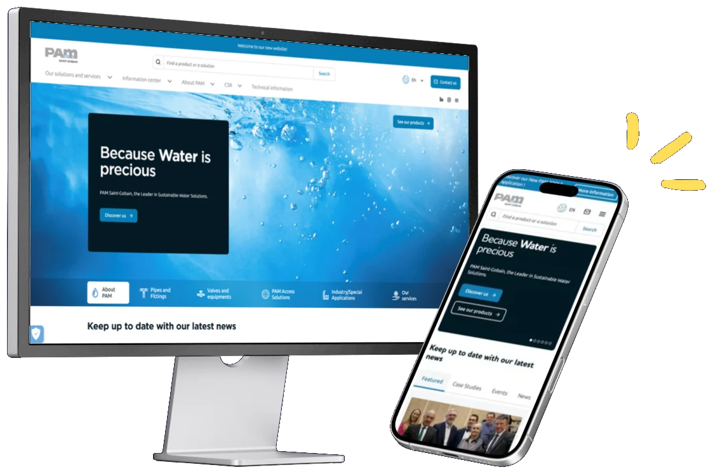

L'ancien site, basé sur Drupal 7, était obsolète et peu ergonomique.

← Retour aux projets
✦ Expérience pro · Alternance
SAINT-GOBAIN
Cheffe de projet marketing digital chez Saint-Gobain PAM : référente de 13 pays pour PAMLINE, la refonte des sites web du groupe.
- Rôle
- Cheffe de projet marketing digital
- Période
- Sept. 2024 – août 2026
- Entreprise
- Saint-Gobain PAM
- Projet
- PAMLINE · 13 pays
L'entreprise
Saint-Gobain PAM est spécialisée dans les solutions de canalisation en fonte ductile pour le transport de l'eau potable et des eaux usées. Filiale du groupe Saint-Gobain, elle est leader mondial dans son secteur et dispose d'un rayonnement international.
Le projet PAMLINE
PAMLINE est bien plus qu'une refonte de site web : c'est une transformation digitale stratégique. Lancé il y a plus de deux ans, le projet vise à moderniser l'image de marque, harmoniser la communication digitale et offrir une expérience utilisateur fluide et multilingue. PAMLINE réunit 13 sites pays dans un même back-office centralisé, certains déclinés en plusieurs langues (par exemple BE-FR et BE-NL pour la Belgique), avec des fonctionnalités adaptées aux besoins locaux.
Pourquoi ce projet est essentiel
L'hébergement arrivant à échéance en novembre 2025, la migration vers Drupal 10 était indispensable.
Améliorer la visibilité internationale, centraliser les contenus et renforcer la cohérence de la marque.
13sites pays pilotés, réunis dans un même back-office
1interlocutrice entre les pays, l'équipe centrale et l'agence de développement
D10migration de Drupal 7 vers Drupal 10, suivie avec l'agence
✦ Référente pour 13 pays
Mon rôle dans ce projet
En tant que référente pour 13 pays, j'assure un suivi quotidien et une coordination constante entre les équipes locales, l'équipe centrale et l'agence de développement. Je ne développe pas : je fais le lien entre les besoins métier et l'équipe technique. Je propose des idées et des évolutions, je rédige les demandes, je teste chaque nouvelle version et je la valide avant sa mise en ligne. Je dois être réactive, répondre aux besoins, trouver des solutions et anticiper les problèmes pour garantir le respect des délais et la qualité des livrables.
Coordination internationale
Intermédiaire entre les pays, l'équipe centrale et l'agence de développement.
Workshops
Organisation des ateliers : analyse des besoins, définition des priorités.
Formation des équipes
Sessions en ligne, guides pratiques, support continu pour les équipes locales.
Force de proposition
Remontée des besoins des pays, idées d'évolutions et priorisation avec l'équipe centrale.
Tests & validation
Recette des nouvelles fonctionnalités, remontée des bugs via tickets, validation avant mise en ligne.
Planification & reporting
Suivi des deadlines, mise à jour des plannings, reporting hebdomadaire.
✦ Coordonnés, formés et suivis au quotidien
Les pays que j'ai accompagnés13
Depuis Pont-à-Mousson, j'ai coordonné les équipes locales de chaque pays : ateliers de cadrage, formations au nouveau back-office, suivi jusqu'à la mise en ligne. Survolez un pays pour le repérer sur la carte.